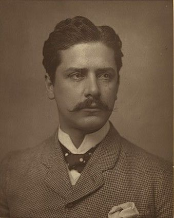

About the Founder
Daniel Murphy (1948–2014)
Murphy’s Law began long before it had a sign on the door. In the early 1980s, attorney Daniel Murphy had already built a reputation as the lawyer you called when things went sideways. Clients came to him with cases that were tangled, unpredictable, and often written off as hopeless — and somehow, he made sense of them. “If anything can go wrong, it will,” he used to say with a half-smile, “so let’s get ready for it.” That mindset became the cornerstone of his practice. In 1985, Daniel officially founded Murphy’s Law, not as a joke, but as a statement of purpose: to bring order to the unexpected, preparation to the unplanned, and strength to those caught off guard by life’s chaos. He built a culture that valued calm over panic, persistence over luck, and integrity above all else. Though Daniel passed in 2014, his philosophy remains at the heart of everything the firm does today. His portrait still hangs in the main conference room — a reminder that while we can’t predict what will happen next, we can always be ready for it.
Our Story
Murphy’s Law was founded on a simple truth: life rarely goes according to plan. After years of seeing good people blindsided by bad luck and bad timing, our founders decided to build a firm that thrives in the unpredictable. At Murphy’s Law, we don’t just prepare for what should happen — we prepare for what can happen. From unexpected accidents to complicated disputes, our team was built to bring order to chaos and turn worst-case scenarios into the best possible outcomes.
Our Mission
Murphy’s Law was built on the legacy of our founder, Daniel Murphy, who believed that great law isn’t about avoiding problems — it’s about solving them when they arrive unannounced. His philosophy still guides us today: prepare for the worst, work for the best, and never lose your composure in between. Our mission is to uphold that tradition in everything we do. We provide legal counsel that’s proactive, grounded, and adaptable — because in a world where anything can go wrong, our clients deserve a firm that’s always ready to make it right.
Our Legacy, Today
Nearly four decades after Daniel Murphy first opened the doors, Murphy’s Law continues to grow on the same foundation he built — preparation, precision, and persistence. Our team today blends experience with modern innovation, using new tools and fresh strategies to uphold an old promise: to stand ready when the unexpected happens. From individual clients to businesses and community organizations, we approach every case with the same mindset that defined our founder — that no challenge is too chaotic, and no problem too far gone to make right. Murphy’s Law remains more than a name; it’s a standard we hold ourselves to every day.